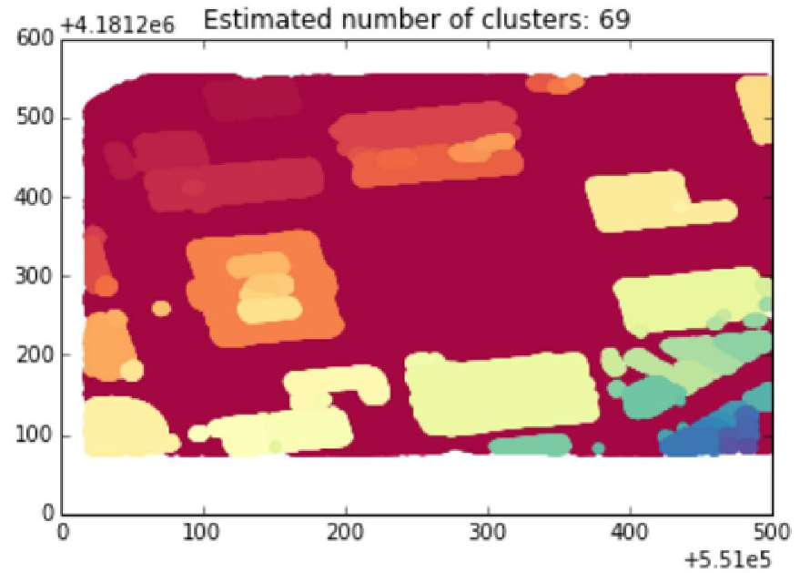
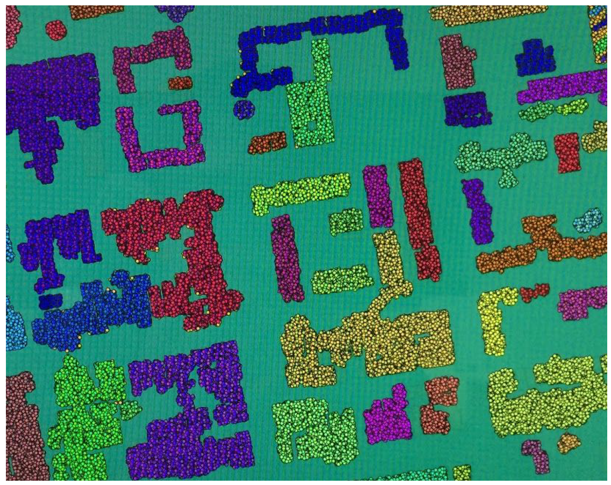
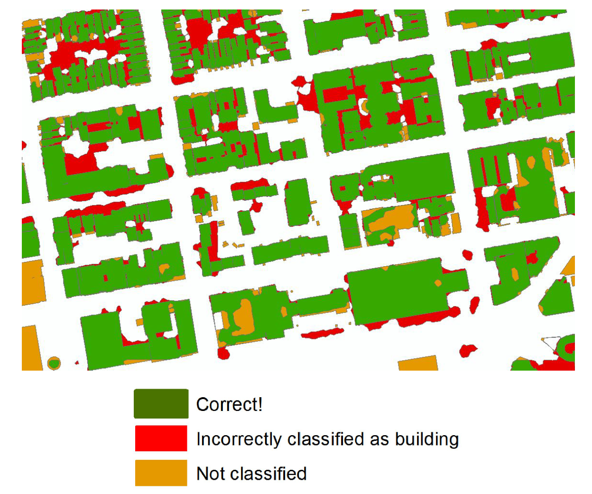

Introduction
Buildings are one of the most fundamental pieces of infrastructure that define the urban environment, yet information on how these structures vary over space is not always accessible to decisionmakers (e.g., cityplanners, civil engineers, energy modelers, cartographers, etc.). When available, data may be distributed across cities, towns, and/or municipalities, which increases the costs of compiling comprehensive regional statistics on building stock. This study presents an approach to collecting basic information on buildings (ie, surface areas and heights) using commonly available Light Detection and Ranging (LIDAR) data. The generality of the framework allows for decisionmakers to compile highlyresolved building inventories over large areas, making it ideal for cityscale assessments. As a part of this study, we present a case study for San Francisco.
Methods
The computational problem of identifying the footprints and heights of buildings at a specific area was approached by using LIDAR data as the primary source of information about the layout of the city. LIDAR data was sourced from the USGS where the data is freely available for several parts of the U.S. (USGS, 2015). LIDAR is a remote sensing technology and the data is often collected by planes flying over the area of interest and scanning the ground generating a digital elevation model (NOAA, 2015). The LIDAR data consists of a dense grid of points with latitude, longitude and elevation information associated with each point. As the information provided by LIDAR is very dense it involves challenges in handling the data so a batch analysis is required to make it more manageable.
The basic goal of this project was to correctly identify the footprint of the buildings of a given area. We used a two-step clustering technique to generate clusters of the LIDAR data points that would correspond to each building. Clustering algorithms have been widely used for grouping similar sets of data by utilizing an unsupervised analysis. The main components used in the clustering analysis were the latitude, longitude and elevation values of the LIDAR points as we wanted to generate cluster of points that were close to each other and had similar elevation values.

For the first step of the process we applied a DBScan algorithm to a subset of the LIDAR data in order to identify the optimal parameters for our classification using crossvalidation. We performed the crossvalidation at an area that we knew the actual building outlines that were sourced from the City of San Francisco (OpenData 2015). The crossvalidation involved in estimating the optimal values for the maximum distance of the points that can be included in a cluster and the minimum number of points that can be considered as an independent cluster. The optimal values of the parameters were the ones that minimized the number of points that were misclassified by the algorithm.
The challenge with this was that the data was very dense and it was hard for our algorithm to correctly separate the outlines of buildings from nearby trees or other objects. Also, the buildings without a flat roof were grouped in more than one cluster which we had to merge back together. These challenges lead us to implement the second step of the process. In this step we identified the points that were representing the road (ground elevation data) as well as the clusters that involved less than 120 points that could not be representing buildings and deleted them from our data. Using this new filtered data we performed a HDBScan algorithm by only using latitude and longitude data since we had already identified the general form of the buildings.

The next step we wished to achieve in this project was to extract the heights of the buildings in order to provide a representation of the vertical growth of the city in combination with the horizontal footprint area. In order to do this analysis we followed a process described by Czoli and used PostGIS and QGIS (Czoli 2014). The process involves applying spatial databases analysis on the LIDAR data in order to extract information of the building heights. The first step involves overlaying the points of the LIDAR data with the footprints of the buildings and performing some simple SQL queries to find the average heights of the points that fall inside the boundary of the building footprints.
Results
To illustrate our results and measure the accuracy of our model we performed the analysis framework described above in the city of San Francisco for which we had data for the building outlines sourced from the city and county of San Francisco (OpenData 2015). By performing the two step clustering model we were able to generate the building clusters and then performed a concave hull method to get the outlines of the clusters in a polygon shape. We converted the polygon shapefiles into a kml format and overlaid them into Google Earth. The results appeared satisfactory in general as our model was able to identify most of the buildings.

In order to properly identify the the misclassifications of the buildings we performed some spatial analysis to our dataset. By overlaying the polygon shapefiles from our model with the actual building footprints that we got from the City and County of San Francisco we were able to perform spatial queries to identify our errors. There were two types of misclassifications that we were interested in. The first type of misclassification related to the buildings that were lost from our model and not classified as buildings. The second type of errors were areas that were classified as buildings by our model but in reality did not match up with the actual shapefile data.

The algorithmic process described in this project is generalizable and can be implemented in different cities to get the building footprints and heights. It can be especially valuable in areas where the urban environment is not well documented and accurate digital information is missing. Being able to generate information of the built environment can be used by decision makers and engineers to perform different kinds of analyses and economic and environmental assessments.
Authors and Contributors
This work was completed in UC Berkeley to fulfill the requirements of "Scalable Spatial Analytics" by @okavvada and @mtaptich.
Support or Contact
Thoughts, questions or comments? Please contact Olga Kavvada: @okavvada or email okavvada@gmail.com.